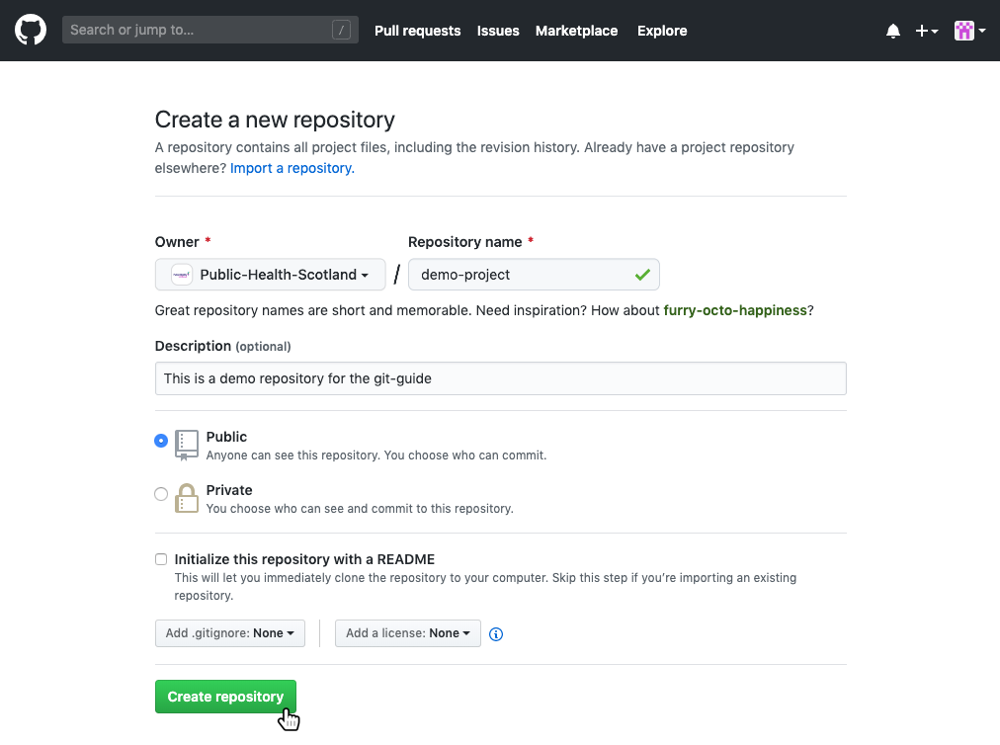

2.1 Quick Start GitHub
2.1.1 New Project Repository
Just like in Git, a repository is used to organise a project. Repositories contain files, folders, images, data-sets (with caution), and anything else the project may need.
If you’re setting up a new project on GitHub, follow these instructions. It is recommended to include a README or some other file with information about the project, this can be done at the same time the new repository is created.
- Go to https://github.com and sign in
- Create the repo - in the upper right corner, next to your avatar, click the
+button and select “New repository”.

- Fill in the details - select the owner, give it a name (short, specfic, memorable, and preferably lowercase-with-hyphens), write a short description, and consider if initialising with a README is appropriate. A README file is used to provide up front information about what the project does, why it’s useful, how users can interact, where to get help, and who maintains and contributes to the project. This is really useful for anyone landing on the GitHub page to find out more. Initialising a repository on GitHub with a README will simply add a markdown file to which you can add the details to later.
- Click “Create repository”

- Link local project to GitHub - if you’re not using a GUI (Graphical User Interface) such as RStudio which has Git and GitHub integrations (see Quick Start RStudio), follow along using command line tools, introduced above in Quick Start Git. In order to commit to Git and then link to GitHub, some file needs to exist. In this example, a README.md file is created. Then, we add the link to the GitHub repo (you only need to do this once per project) with
git remote add <name> <url>(<name>is any name to refer to the GitHub connection butoriginis the most common/preferred name to use) and then sending the first set of changes to GitHub usinggit push <name> <branch>. Also, this example uses the HTTPS connection (a URL) to GitHub. Your URL will be unique to your project. Check the GitHub code page for the instructions.
username@NSS000000 MINGW64 ~/Documents/demo-project
$ echo "# demo-project" >> README.md
$ git init
Initialized empty Git repository in C:/Users/username/Documents/demo-project/.git/
username@NSS000000 MINGW64 ~/Documents/demo-project
$ git add README.md
$ git commit -m "first commit"
[master (root-commit) 1ab2cde] first commit
1 file changed, 1 insertion(+)
create mode 100644 README.md
username@NSS000000 MINGW64 ~/Documents/demo-project
$ git remote add origin <url>
$ git push origin master
Counting objects: 3, done.
Writing objects: 100% (3/3), 220 bytes | 220.00 KiB/s, done.
Total 3 (delta 0), reused 0 (delta 0)
To <url>
* [new branch] master -> master
Branch master set up to track remote branch master from origin.
username@NSS000000 MINGW64 ~/Documents/demo-project
$2.1.2 Existing Project Repository
- Download the repository from GitHub - get the URL for the project you are looking to contribute to and using
git clone <url>make a local copy on your machine. This will create a local folder with the same name as the repo and a copy of all the files inside. In order to continue version control on that folder/repo, move into the folder on the command line usingcd <folder-name>.
username@NSS000000 MINGW64 ~/Documents
$ git clone <url>
Cloning into 'existing-project'...
remote: Enumerating objects: 7, done.
remote: Total 7 (delta 0), reused 0 (delta 0), pack-reused 7
Unpacking objects: 100% (7/7), done.
username@NSS000000 MINGW64 ~/Documents
$ cd exising-project
username@NSS000000 MINGW64 ~/Documents/existing-project
$- Set up a branch, make some changes, stage them, commit them, and push them back to GitHub
username@NSS000000 MINGW64 ~/Documents/existing-project
$ git checkout -b 'feature'
Switched to branch 'feature'
username@NSS000000 MINGW64 ~/Documents/existing-project
$ git add new-file.md
username@NSS000000 MINGW64 ~/Documents/existing-project
$ git commit -m "add new-file"
username@NSS000000 MINGW64 ~/Documents/existing-project
$ git push -u origin feature
Counting objects: 1, done.
Writing objects: 100% (1/1), 10 bytes | 10.00 KiB/s, done.
Total 1 (delta 0), reused 0 (delta 0)
To <url>
* [new branch] feature -> feature
Branch feature set up to track remote branch feature from origin.
username@NSS000000 MINGW64 ~/Documents/existing-project
$ Open a pull request - when you’ve made changes that are ready to be included into production, open a pull request to propose and collaborate. These changes are proposed in that branch, which ensures that the master branch only contains finished and approved work.
- On GitHub, go to the main page of the repository.
- In the “Branch:” menu, choose the branch that contains your commits.
- To the right of the “Branch” menu, click “New pull request”.
- Use the “base:” branch dropdown menu to select the branch you’d like to merge your changes into.
- Use the “compare:” branch dropdown menu to choose the topic branch your changes are in.
- Type a title as a description for your pull request.
- If your pull request is ready for review, click “Create Pull Request”. To create a draft pull request, use the dropdown menu and select “Create Draft Pull Request”, then click “Draft Pull Request”.